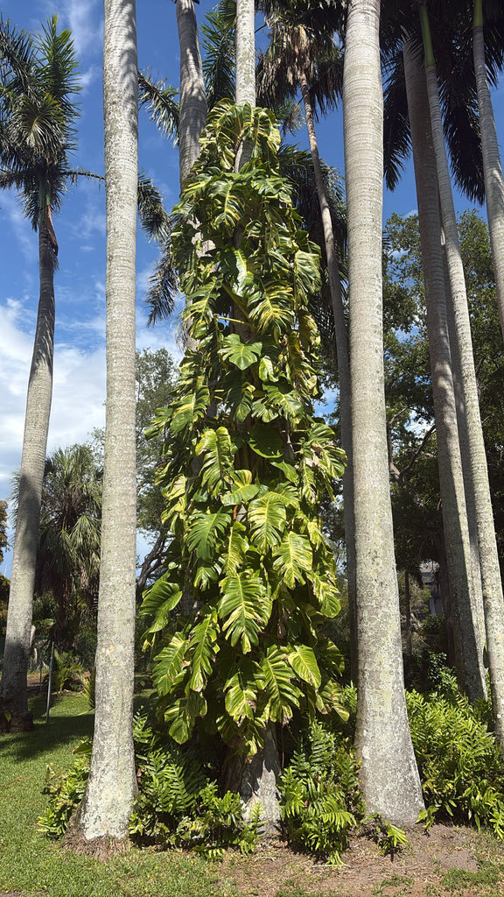

- Golden Pothos is a true botanical oddity: it does not flower — not indoors, not outdoors, not even in the wild. Researchers traced the cause to a broken gene in the gibberellin biosynthesis pathway, the same hormone system that normally tells a plant it's time to bloom.
- On the forest floor, a juvenile pothos vine does something almost no other plant does: it grows toward darkness rather than light. The darkest patch in a sunlit forest is almost always the shadow at the base of a large tree trunk — so the vine uses shadow as a homing signal, steering straight for its future host. The moment it makes contact and starts climbing, it flips back to chasing the sun.
- The small, heart-shaped leaves you see on potted plants are the vine's juvenile form. Given a tree to climb outdoors, the same plant transforms into something almost unrecognizable — leaves reaching three feet long, with splits and holes along the midrib, on vines that can run fifty feet up into the canopy.
- The common name 'Devil's Ivy' is literal: the plant stays green even when kept in complete darkness, outlasting almost any neglect. That same toughness is exactly why it causes problems when it escapes cultivation in warm climates.
Golden Pothos is native to Mo'orea, a small volcanic island in the Society Islands of French Polynesia — a surprisingly narrow home range for a plant that has since colonized the tropics worldwide. In its native habitat it grows as a hemiepiphytic climber in lowland rainforest understory, clinging to tree trunks with adhesive aerial roots and working its way toward the canopy.
It entered the global horticultural trade in the late 1800s — it was first formally described as Pothos aureus in 1880 — and its ease of propagation by cuttings made it irresistible to the houseplant industry. It has since naturalized in tropical and subtropical regions across Southeast Asia, the Pacific, the Caribbean, South America, and Florida, where it was introduced as an ornamental.
- The naming history of this plant is almost comically tangled. Described in 1880 as Pothos aureus, it was later renamed Rhaphidophora aurea when its flowers were first observed in 1962, then reclassified as Scindapsus aureus, and finally settled into its current accepted name, Epipremnum aureum, in 1964.
- The casual name 'pothos' is a ghost of that first misidentification and has simply never let go.
- Golden Pothos is the only member of the arum family (Araceae) documented to essentially never flower — not because of its environment, but because of a mutation in the gene responsible for producing gibberellin, the hormone that triggers flowering. Without it, the plant never receives the internal signal to bloom, regardless of conditions.
- Researchers have confirmed this by applying gibberellin externally, which does induce flowers — meaning the machinery is otherwise intact.
- The leaf transformation between juvenile and adult growth is dramatic enough that the two phases were once thought to be different plants. Potted plants stay permanently juvenile, bearing small heart-shaped leaves.
- Out in a warm landscape with something to climb, the same plant shifts into adult mode: leaves can reach three feet long and develop deep lobes and holes along the midrib, on thick vines that grip tree bark with specialized aerial roots.
- Before any of that climbing begins, the juvenile vine solves a navigational problem most plants never face: how to find a tree in the first place. Epipremnum vines are documented to use skototropism — they grow toward the darkest area in their visual field rather than toward light. In a forest, the deepest shadow reliably marks the base of a large trunk, so darkness functions as a homing beacon.
- Once the vine contacts bark and begins its vertical ascent, the behavior reverses and the plant becomes positively phototropic, angling its new growth upward toward the canopy light.
Because Epipremnum aureum virtually never flowers, it contributes zero nectar and zero pollen to local ecosystems — no butterflies, no bees, no native pollinators benefit from its presence. That absence is itself an ecological lesson: a plant can blanket an entire tree and offer nothing to the food web that surrounds it.
In its native French Polynesian rainforest it provides some structural cover for small invertebrates and climbing pathways for forest fauna, but that ecological relationship does not transfer to Florida, where it has no co-evolutionary history with local wildlife.
In Florida, its most notable wildlife interaction is negative: when it escapes cultivation and establishes outdoors, it can blanket the forest floor and smother tree trunks, outcompeting native groundcovers and reducing habitat quality for the species that depend on them. Visitors interested in the park's best pollinator habitat will find it among the native plantings.
Propagation is almost entirely vegetative — by stem cuttings, which root readily in water or soil, or even from small stem fragments left on the ground. The plant essentially never produces viable seed due to a genetic mutation that prevents flowering.
In cultivation it is grown exclusively from cuttings, and the vast majority of pothos plants worldwide are descended from the same sterile clonal lineage.
Flowers are produced on a spadix enclosed in a spathe, typical of the arum family — but in practice, this plant does not flower. A mutation in its gibberellin biosynthesis pathway disables the hormonal trigger for bloom, making it the only known member of the Araceae family documented to never flower under any natural conditions.
Juvenile leaves — the form seen on all potted plants — are heart-shaped, glossy, and typically under eight inches long, often with yellow or cream variegation on a green ground. Adult leaves, produced only when a vine climbs vertically with adequate light, can reach three feet long and develop irregular lobes and splits along the midrib. The two forms look strikingly different.
Stems are slender, flexible, and can run to 65 feet or more on an outdoor-grown climbing plant. Nodes along the stem produce two kinds of aerial roots: clasping roots that grip bark or other surfaces to haul the vine upward, and finer feeding roots that absorb moisture and nutrients from the air and bark. Both types appear wherever a node contacts a surface.
Look up into the park's trees — if a pothos vine has been climbing for long enough, you may spot the dramatic difference between what you see at eye level and what is hanging overhead. Near the base, small heart-shaped juvenile leaves; higher up, the same vine producing leaves that can reach three feet long with deep lobes and holes, a transformation triggered by vertical climbing itself.
Along the stem, look closely at the nodes — the slight joints where each leaf attaches — for the short, stubby aerial roots reaching toward whatever surface is nearest. If the vine is climbing a tree or post, you may see the clasping roots flattening against the surface like tiny fingers. You will not find flowers on this plant under any normal circumstances.
Do not eat any part of this plant. All tissues contain insoluble calcium oxalate crystals that cause immediate burning and irritation of the mouth, tongue, and throat on contact, followed by drooling, vomiting, and difficulty swallowing. The ASPCA lists Golden Pothos as toxic to dogs, cats, and horses on the same mechanism. In rare cases, severe throat swelling can cause breathing difficulty.
If a pet or child has chewed on any part of this plant, contact your veterinarian or the ASPCA Animal Poison Control Center at (888) 426-4435. The sap can also mildly irritate skin and eyes on direct contact.
The genus name Epipremnum comes from the Greek words 'epi' (over) and 'premnon' (trunk or stem) — a reference to how the plant grows over and up whatever it can find. The species name aureum is Latin for 'golden,' for the yellow variegation on the leaves.
Palma Sola Botanical Park displays this plant as a specimen of horticultural and natural-history interest, not as a landscape recommendation. It is displayed in a managed setting; please do not introduce cuttings or plant fragments into the surrounding natural areas.


- © Randall Carter (CC-BY-NC), via iNaturalist
- © Lilah Thomas (CC-BY-NC), via iNaturalist